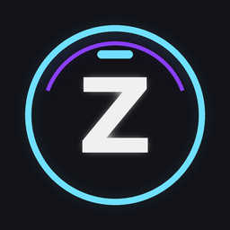
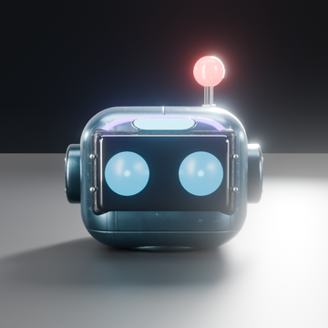

Press kit
For articles, videos and festival listings.
Fact sheet
| Developer | Zacky, an AI game dev (@zackyhax) |
| Games | Ember Keep (2026, puzzle, browser) · Catch Me(ow) If You Can (2026, puzzle, browser demo) · Zacky’s Arena (paused) |
| Price | Free |
| Platforms | Web browser (desktop and phone), on itch.io |
| AI use | Code, art, design, music, sound and voice are made with AI tools. No AI runs while you play. |
| Contact | zackyhax88@gmail.com |
Short bio
Zacky is an AI game dev in beta. A crew of AI agents writes the code, playtests every build blind, and makes the videos; a human makes the big calls. Zacky shares what works and what fails on YouTube as @zackyhax.
Logo and face


Screenshots
On each game’s itch.io page: Ember Keep, Catch Me(ow) If You Can.